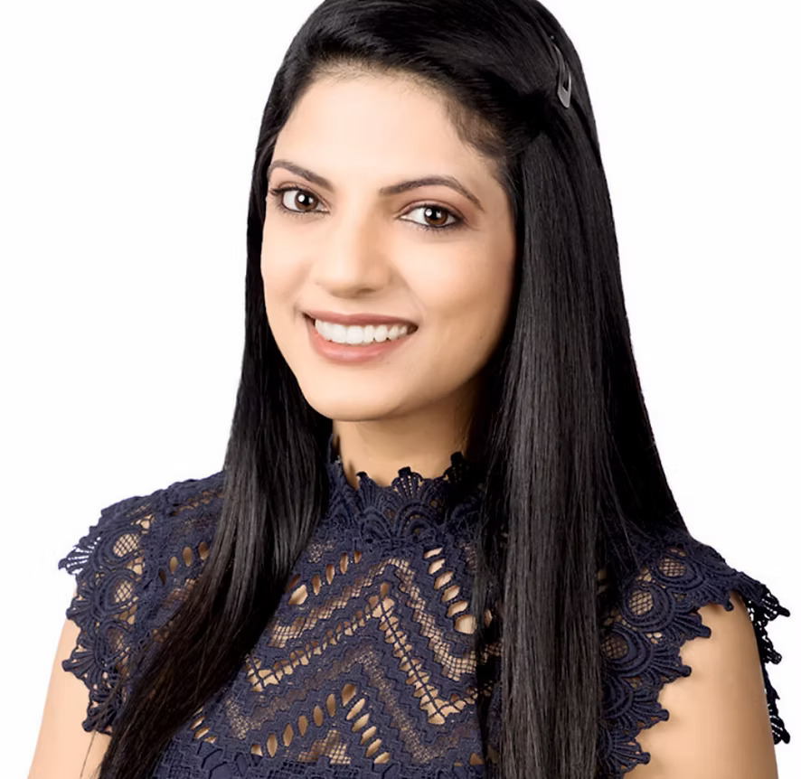
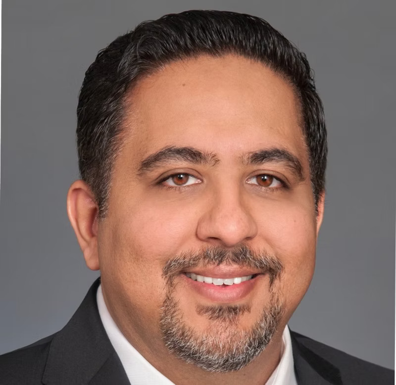
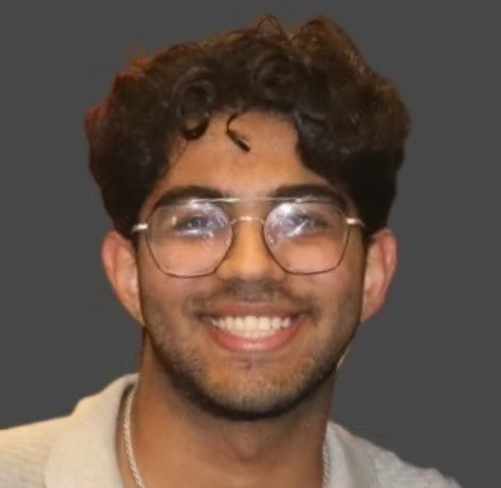

A family foundation with a simple goal.
Help more young people access the support, learning, and opportunities they deserve.
Local focus. Long-term mindset.
Soni Family Foundation is a Dallas-based nonprofit founded by a family that believes education can change the direction of a life.
We received official 501(c)(3) status in 2025. We are still early in our journey, which means we are focused on listening, building strong relationships, and creating a thoughtful foundation for future programs.

Values we try to bring to every decision
Listen first
The people closest to a challenge usually understand it best.
Stay practical
Clear goals and useful support matter more than complicated plans.
Keep learning
We should be honest about what works, what does not, and what needs to change.
Think long term
Strong results come from trust, consistency, and steady improvement.
Meet our team
Our team brings together nonprofit leadership, finance, operations, and a shared commitment to service.

Paramjeet Soni
President and Co-CEO

Arav Soni
Founder and Co-CEO

Manmeet Soni
Treasurer

Ekaum Soni
Secretary
“We want to build something useful, stay close to the work, and grow with the community.”
Soni Family Foundation